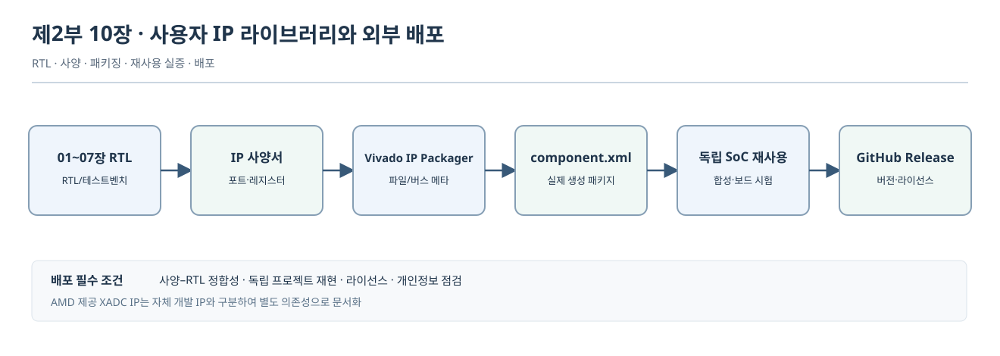

제2부 10장 · 사용자 AXI IP 라이브러리 구축·배포
1. 과제 개요
01~09장 실습에서 설계한 사용자 AXI IP를 독립적으로 재사용할 수 있도록 기술 사양서와 Vivado IP 패키지를 정리하고, 새 프로젝트에서 재사용 시험한 뒤 GitHub 공개용 결과물로 완성합니다.
2. 입력·출력 정의
| 구분 | 입력/산출 | 설명 |
|---|---|---|
| 입력 소스 | 01~07장 사용자 AXI RTL·테스트벤치 | 완성된 사용자 소스와 종속 하위 코어 |
| 입력 설정 | 인터페이스/파라미터/Address Map | 실제 신호명과 레지스터 정보 |
| 출력 IP | component.xml + HDL 패키지 | Vivado IP Catalog에 등록할 패키지 |
| 출력 문서 | IP_SPEC.md / README / CHANGELOG | 기능·버전·배포 규칙 |
| 배포 출력 | GitHub Release | 라이선스·예제·ZIP·문서 링크 |
3. 전체 동작 구조

4. 기존 기능과 추가 기능
유지: 제2부 01~09장의 사용자 RTL과 Vivado 프로젝트
추가: 재사용 라이브러리, IP별 사양서, Release Package, 독립 재현 예제
배포 대상
| 범위 | 패키지 대상 | 주의 |
|---|---|---|
| 01~07장 | 사용자 AXI IP 및 독립 RTL Core | 실제 포트·레지스터 계약과 component.xml 대조 |
| 08장 | AMD XADC Wizard 사용 예제 | AMD 제공 IP 자체를 사용자 제작 IP로 표시하지 않음 |
| 09장 | 통합 C 애플리케이션 예제 | 하드웨어 IP 패키지와 분리 |
5. Vivado·GitHub 따라하기
- 01. 기존 09장 프로젝트에서 10장 복제
Vivado → File → Project → Save As에서
soc_ip_design_10으로 복제하고 09장 원본은 유지합니다. - 02. 배포 대상 선정
01~07장 사용자 제작 AXI IP를 목록화합니다. AMD XADC Wizard 및 09장 소프트웨어 기능은 사용자 IP와 구분합니다.
- 03. 독립 IP 사양서 작성
각 IP의 버전, 기능, 포트 방향·폭, 파라미터, Clock/Reset, IRQ, 레지스터 오프셋과 Reset 값을
P2_10_IP_LIBRARY_SPEC.md에 채웁니다. - 04. 보드 의존성 분리
pwm_core,button_event_core등은 물리 핀명을 직접 사용하지 않도록 확인하고, 보드 핀·XDC는 예제 Top으로 분리합니다. - 05. IP Packager 열기
Vivado IP Catalog에서 패키징할 사용자 IP를 선택하고 Edit in IP Packager로 엽니다. 아직 패키지 없는 Core는 Create and Package New IP를 사용합니다.
- 06. Identification 및 버전
Name·Vendor·Library·Version·Display Name을 설정합니다. 교육용 시험 버전과 외부 공개 버전을 구분합니다.
- 07. File Groups 검토
IP의 실제 HDL 및 하위 Core가 파일 그룹에 모두 포함되어 있는지 확인합니다. HDL 파일을 IP 루트의 component.xml 아래 경로로 복사해 상대경로 참조가 유지되도록 합니다. 시뮬레이션용 TB는 합성 파일 그룹에 넣지 않습니다.
- 08. Ports and Interfaces 검토
S00_AXI의 Clock/Reset 연동, 메모리맵, 추가 GPIO/IRQ 포트를 실제 HDL과 대조합니다. - 09. 파라미터·Address Map 검토
클록에 의존하는 스캔·버튼·PWM·초음파 파라미터의 허용 범위를 정의하고, 주소 정렬·레지스터 접근 속성을 사양서와 대조합니다.
- 10. Re-Package IP 실행
Review and Package에서 포트 오류와 누락 파일을 정리한 뒤 Re-Package를 실행합니다. 최종 생성된
component.xml을 확인합니다. - 11. 독립 SoC에서 재사용 시험
새 최소 프로젝트의 IP Repository에 패키지를 추가하고 AXI 연결 자동화, 주소 할당, Clock/Reset, Wrapper 생성까지 진행합니다.
- 12. C 드라이버 예제 시험
예제 코드는 고정 Base Address를 쓰지 않고 함수의
base인자로 주소를 받습니다. `DISP 0050`과 LED 제어처럼 단순한 기본 동작부터 확인합니다. - 13. RTL·합성·보드 동작 확인
지원 IP마다 RTL 테스트벤치, Vivado Synthesis/Timing, Basys3 동작을 순서대로 확인합니다.
- 14. 라이선스·보안 검토
사용자 소유 코드의 배포 라이선스를 결정하고, 개인 계정·경로·토큰·스크린샷 정보를 검사합니다. AMD IP의 외부 재배포 조건도 별도 확인합니다.
- 15. 릴리스 ZIP 생성
README, 사양서, 실제 IP 패키지와 독립 재사용 예제를 포함합니다. 다른 폴더에 압축 해제 후 동일하게 설치되는지 시험합니다.
- 16. GitHub Release 게시
공개 승인을 받은 뒤 버전 태그·릴리스 노트·다운로드 ZIP을 게시하고 웹 링크를 확인합니다.
6. 재사용 예제 코드
드라이버 함수는 실제 주변장치 Base Address를 인자로 받아 다른 SoC에도 사용할 수 있습니다.
#include "xil_io.h"
#include "xil_types.h"
#define DISP_VALUE_OFFSET 0x00U
#define DISP_CTRL_OFFSET 0x04U
/* 실제 SoC에서 할당한 Base Address를 인자로 받아 보드 의존성을 제거한다. */
static void fnd_write4(UINTPTR base, u32 packed_bcd)
{
// REG0에 숫자 4개를 16비트 BCD 형태로 기록.
Xil_Out32(base + DISP_VALUE_OFFSET, packed_bcd & 0xFFFFU);
// REG1의 표시 허용(bit0) 활성화.
Xil_Out32(base + DISP_CTRL_OFFSET, 1U);
}
패키지 파일 확인
# IP 라이브러리 폴더의 실제 component.xml 목록 보기
find ip-library/ip -name component.xml -type f -print
7. 기술 사양서 및 배포 점검
P2_10_IP_LIBRARY_SPEC.md에 모든 IP의 레지스터·버스·안전 조건과 공개 범위를 정리했습니다.
P2_10_RELEASE_CHECKLIST.md로 IP 패키지 파일·라이선스·보안 항목을 점검합니다.